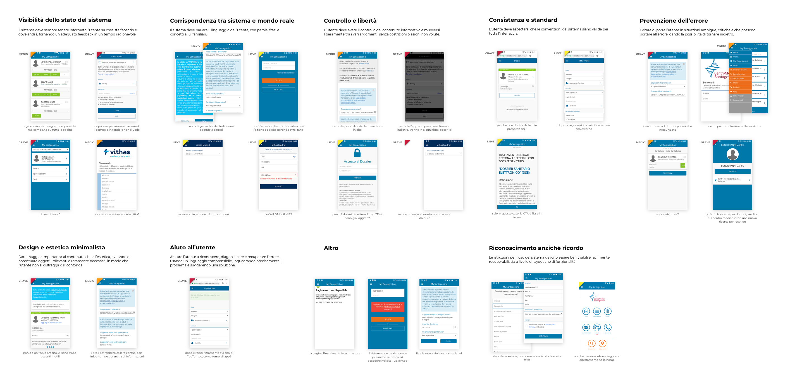
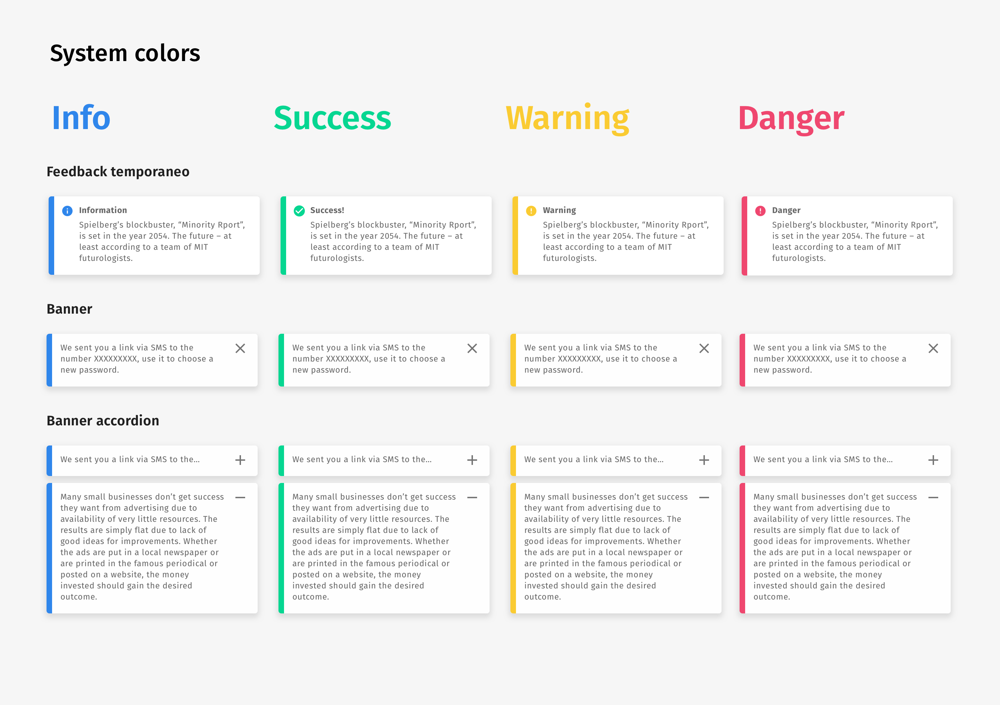
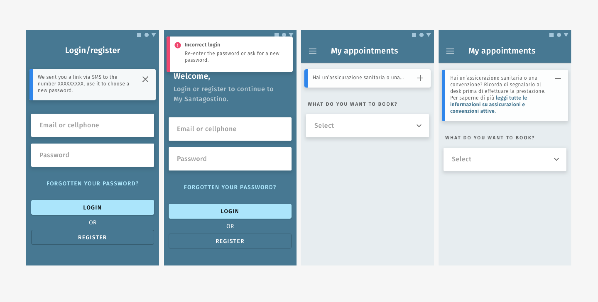
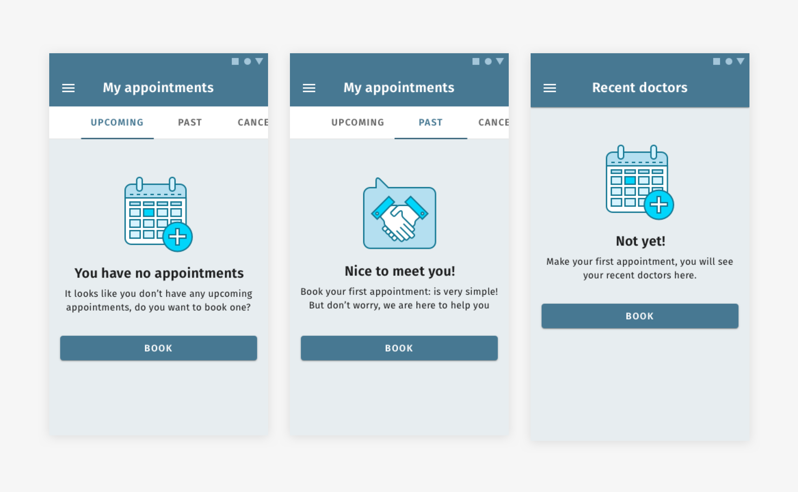
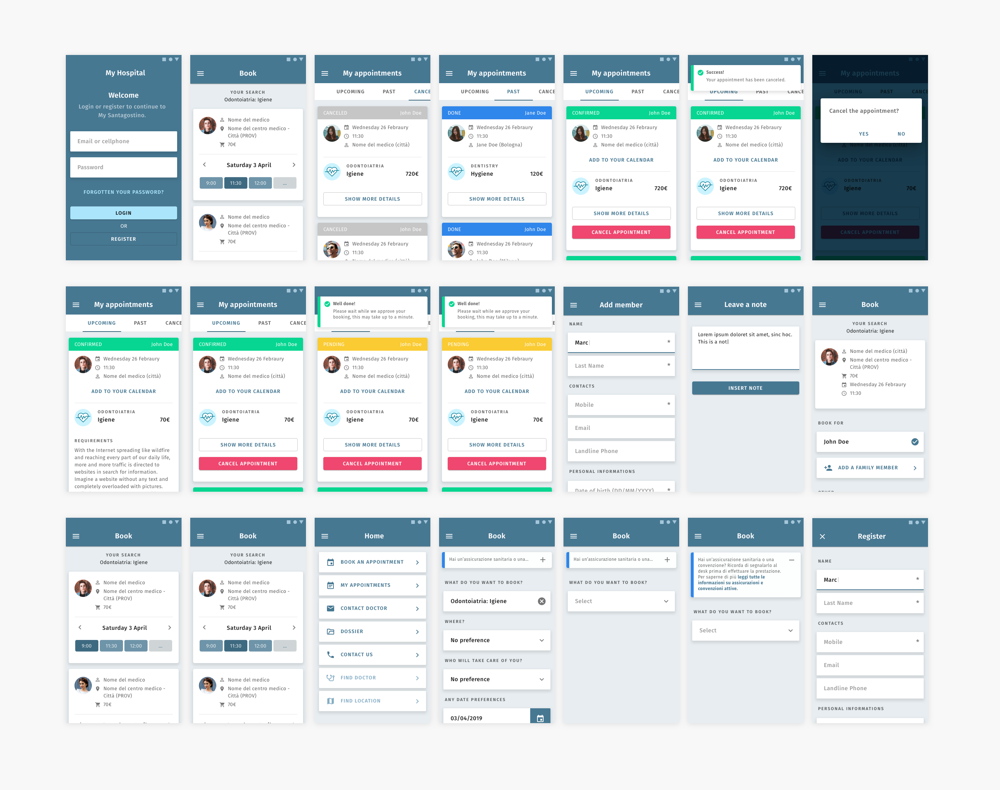

TuoTempo is responsible for creating management services for hospitals and healthcare facilities. They provide online booking services and documentation management for doctors and patients.
The Challenge
The customer's need for this project was to identify critical issues on the current application and design new solutions to improve usability. Therefore, as a first step, we decided to carry out a small analysis that would allow us to obtain information and highlight critical points, and, in parallel, a comparison with the competitors to obtain ideas and new points of view. In detail, the analysis phase focused on three activities: heuristic analysis, benchmarking, and UI inventory.
Heuristic analysis
The heuristic evaluation is a usability evaluation method in which an interface is analyzed to identify weaknesses and critical points through good design guidelines, called heuristics.
Thanks to this analysis, we have been able to identify usability issues that we have categorized according to severity levels (mild, medium, severe).

Competitor analysis
We analyzed the apps: Doctors, Miodottore, Visitami, Poliambulanza Booking, and ZocDoc taking into account some parameters and central themes according to the customer's needs. In particular, we analyzed: navigation, booking flow, search criteria, on-boarding, and look & feel, obtaining valuable results and ideas concerning the critical points highlighted by the heuristic analysis.
The solutions
By crossing the results of the analysis, we have produced a list of proposals to improve the application, categorized according to a scale of severity and difficulty of implementation. This allowed us, in the prioritization phase, to concentrate on the activities with the greatest impact and least implementation difficulty, to proceed with small validated steps.
Notifications and system colors
One of the problems highlighted by the heuristic analysis was the lack of a coherent and hierarchical use of colors, especially in notifications, information banners, and actions. Therefore, 4 colors have been added to the main palette which clearly shows the system status: it is important to use different colors from the main ones to communicate clearly to the user the status of the operations performed.
We have also identified 3 types of information tools: the temporary feedback, the banner, and the banner accordion.
Contextual messages on user actions (e.g. login failed notification) have been associated with temporary feedback.
The informative contents present in the various sections of the application, on the other hand, is associated to the other notification types, following the distinction between main and secondary information: the first are expressed through the accordion banners, while the second through the banners, which provide the possibility of removal by the user.
Blank states and loading
Blank states are an excellent opportunity to establish a dialogue with the user and lead him to perform actions without discouraging him.
During the heuristic analysis, the lack of treatment of these cases emerged, which is why we designed some illustrations and microcopies to make the blank states more pleasant.
Furthermore, to improve the user experience, we have created some animation prototypes for the loading phase of the application: one closer to the current trends, the other with an animation of a beating heart, which comes alive following the heartbeat of a healthy person.
UI prototype
As a final design activity, we have carried out a generalized refactoring of the UI of the already existing application, to improve the hierarchy and usability of content and actions. The images show some views that are part of the refactoring proposal, made with a clickable inVision prototype.